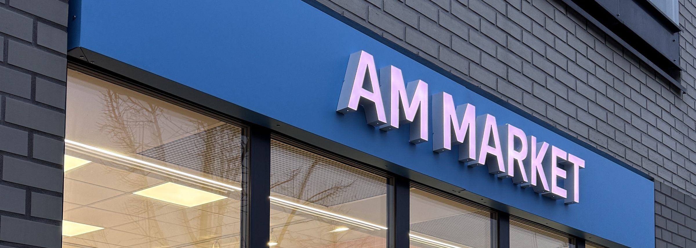
Kasetony i semafory reklamowe
Kasetony reklamowe • kasetony LED • kasetony semaforowe • szyldy z Dibondu • produkcja, dostawa i montaż
Produkujemy kasetony reklamowe podświetlane LED
Produkujemy kasetony reklamowe podświetlane LED oraz kasetony bez podświetlenia, dopasowane do logotypu, identyfikacji wizualnej i miejsca montażu. Wykonujemy kasetony prostokątne, kwadratowe, okrągłe, montowane na ścianie lub prostopadle do elewacji jako kasetony semaforowe dwustronne. Oferujemy konstrukcje z profili kasetonowych, giętych płyt kompozytowych typu Dibond, elementy frezowane i wycinane oraz kasetony z podświetlanym licem lub podświetlanymi literami.
Każdy szyld projektujemy indywidualnie: dobieramy wymiary, materiał, kolor, sposób świecenia, konstrukcję i mocowanie. Możliwe jest zamówienie kasetonu z dostawą, montażem i instalacją.
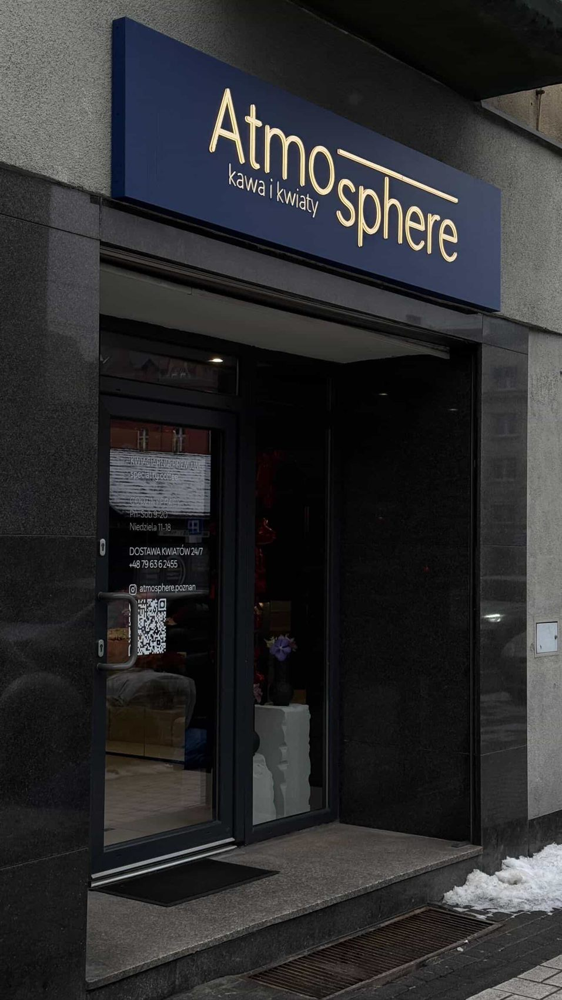
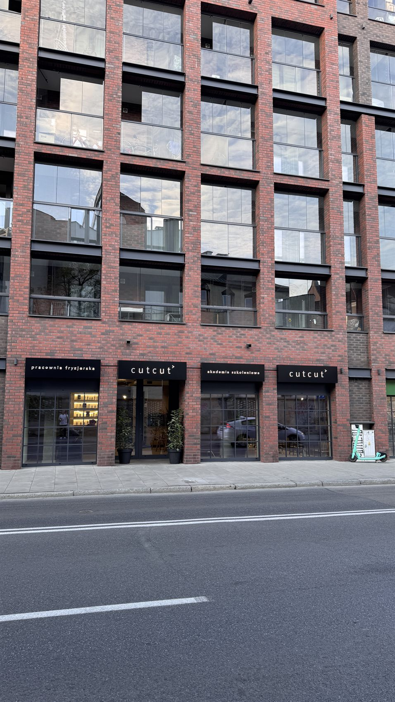
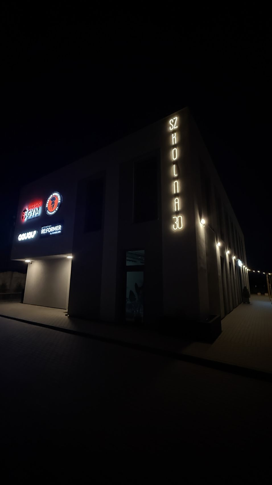
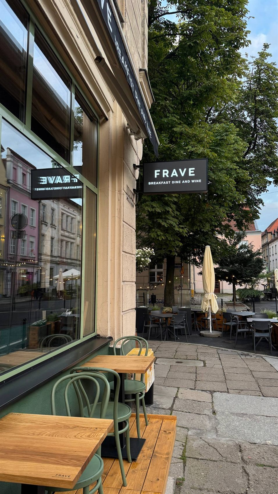
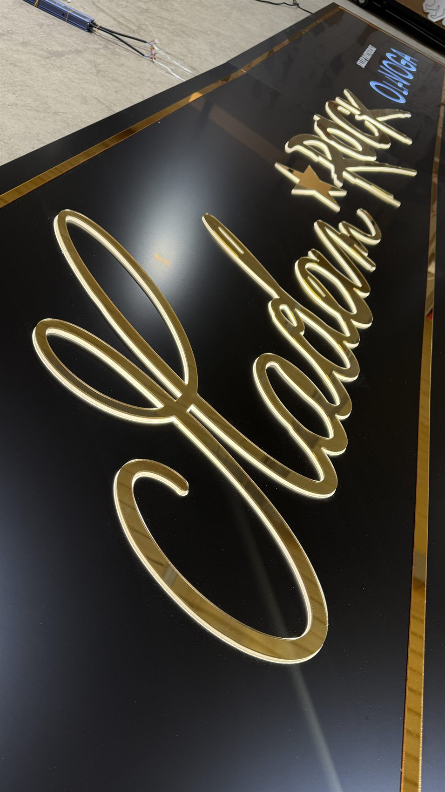
Czym jest kaseton reklamowy i jakie ma zastosowanie?
Kaseton reklamowy to przestrzenny szyld z obudową i frontem przeznaczonym do ekspozycji grafiki, logo lub liter. Może być jednostronny albo dwustronny, podświetlany w całości, punktowo lub pozbawiony podświetlenia.
Kasetony wykorzystuje się do oznakowania sklepów, lokali usługowych, salonów beauty, restauracji, aptek, biur, hoteli, punktów handlowych i obiektów przemysłowych. Odpowiednio dobrane oświetlenie poprawia czytelność reklamy po zmroku.
Kasetony montowane na ścianie – jednostronne
Wykonujemy kasetony przeznaczone do montażu bezpośrednio na ścianie, elewacji, fasadzie lub przygotowanej konstrukcji. W zależności od projektu stosujemy profile kasetonowe, aluminiowe ramy oraz obudowy z giętego kompozytu aluminiowego.
Kasetony ścienne mogą mieć podświetlane całe lico, wybrane fragmenty grafiki lub pojedyncze litery i znaki. Możemy wykonać kaseton o prostych bokach, z frezowanym frontem, nakładanymi literami albo indywidualnym kształcie.
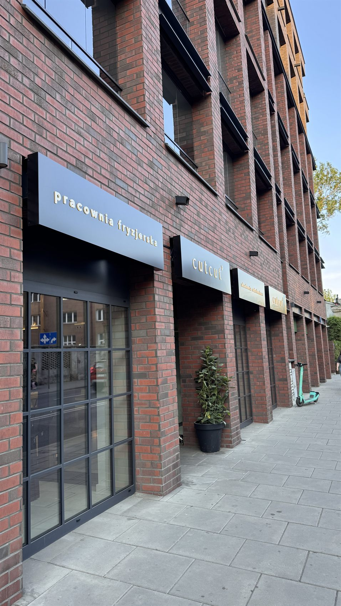
Kasetony semaforowe – dwustronne, prostopadłe do ściany
Produkujemy kasetony semaforowe, czyli szyldy montowane prostopadle do ściany, widoczne dla osób poruszających się w obu kierunkach wzdłuż ulicy lub pasażu.
Oferujemy semafory okrągłe, kwadratowe i prostokątne, w wersjach dwustronnych, z podświetleniem LED lub bez. Sposób mocowania, wysięg i konstrukcję wsporczą dobieramy do wymiarów, ciężaru kasetonu oraz warunków elewacji.
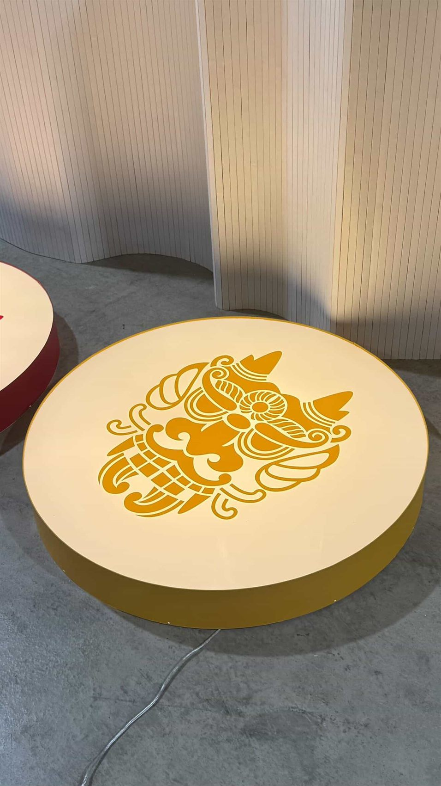
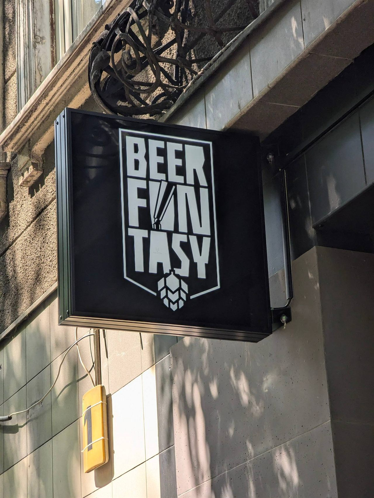
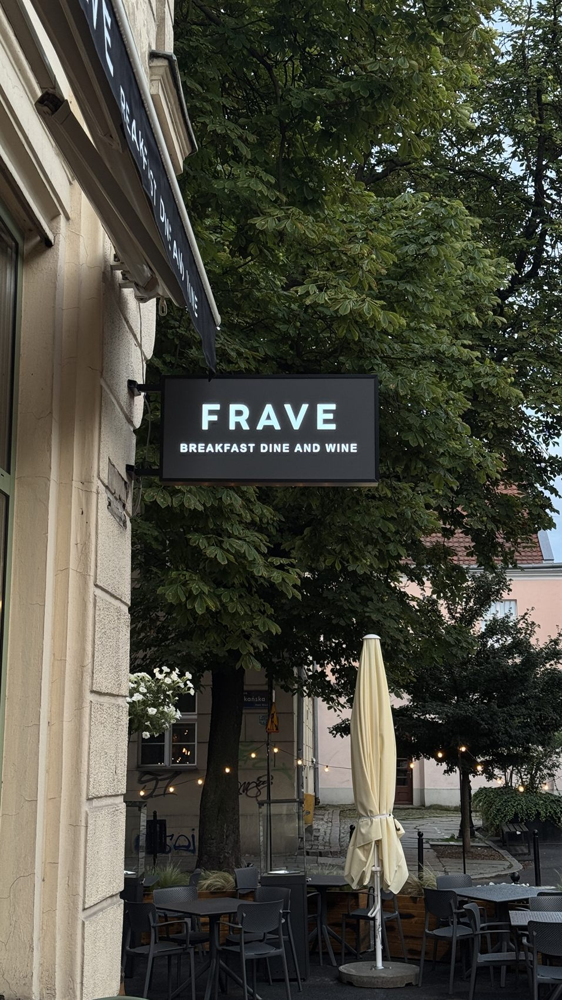
Technologie produkcji – profile, gięcie, frezowanie i wycinanie
-
Kasetony z profilu kasetonowego
Klasyczne obudowy oparte na profilach, umożliwiające wykonanie estetycznych szyldów z wymiennym lub stałym licem, zależnie od projektu.
-
Kasetony z giętego Dibondu
Obudowa formowana z frezowanej i zaginanej płyty kompozytowej. Technologia pozwala uzyskać nowoczesne, gładkie powierzchnie i precyzyjne krawędzie.
-
Kasetony frezowane i wycinane
Fronty z wyciętymi literami, logo lub grafiką; otwory mogą być podklejane plexi opalową, aby świeciły tylko wskazane elementy.
-
Kasetony z literami przestrzennymi
Na licu montujemy oddzielne litery LED lub inne elementy przestrzenne, tworząc wielowarstwowy efekt reklamy.
Rodzaje podświetlenia kasetonów LED
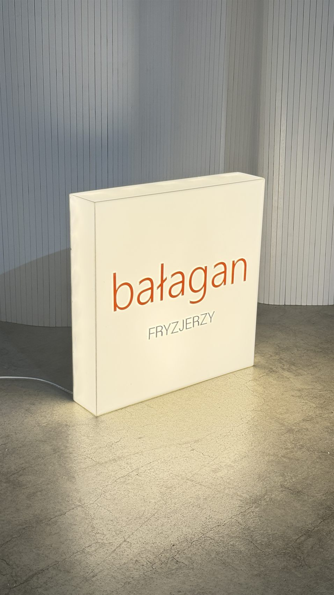
Podświetlane całe lico
Równomierne rozświetlenie frontu z plexi opalowej lub odpowiednio przygotowanej powierzchni przepuszczającej światło.
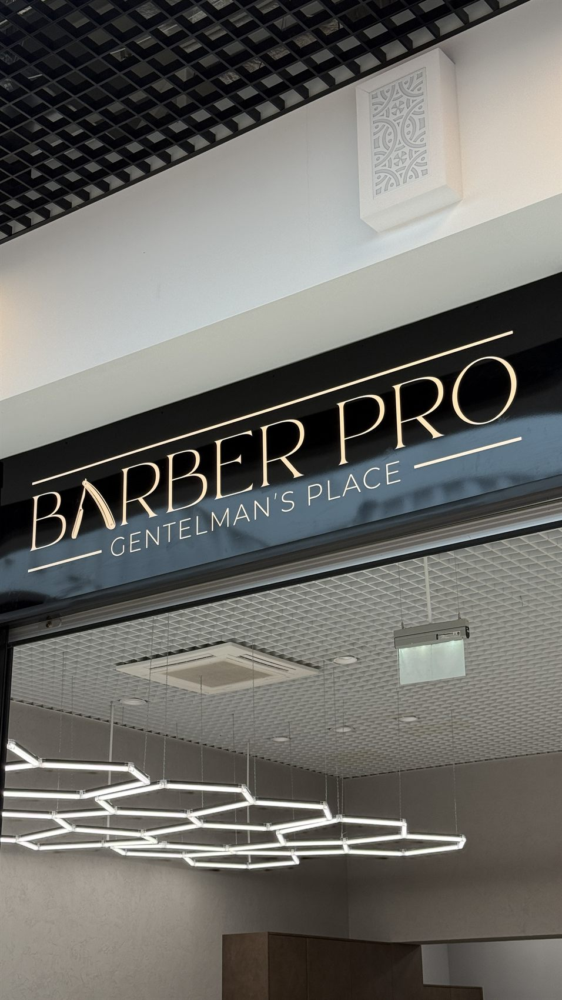
Podświetlane litery i logo
Świecą wyłącznie wyfrezowane lub wycięte elementy, z podklejeniem materiałem rozpraszającym światło.
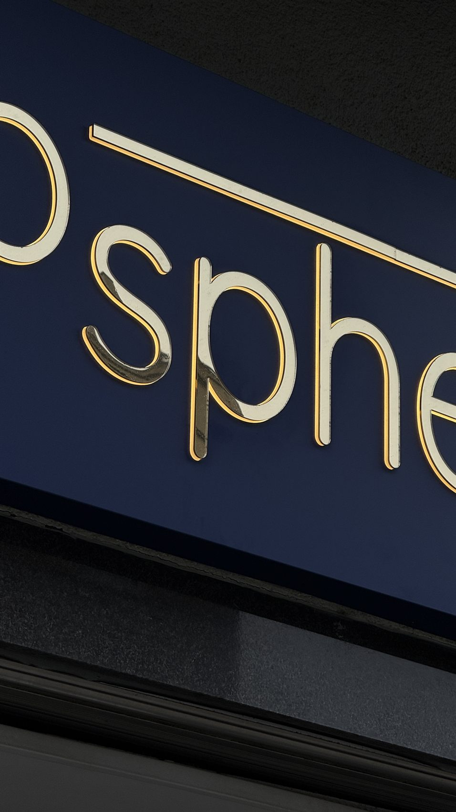
Litery przestrzenne na kasetonie
Możliwość połączenia kasetonu z literami Frontlit, a w odpowiednio zaprojektowanych konstrukcjach także z efektem HALO.
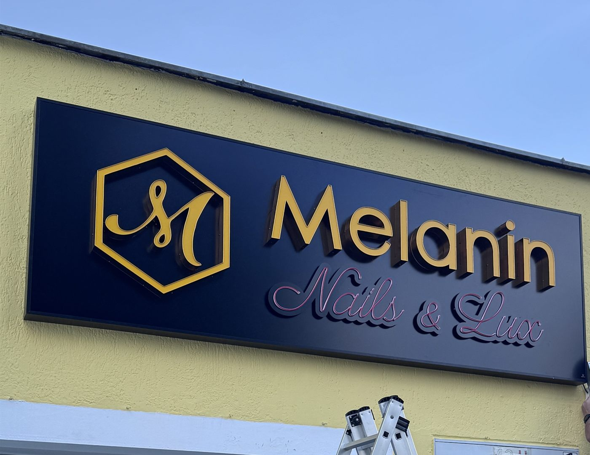
Bez podświetlenia
Kasetony i szyldy dekoracyjne do ekspozycji dziennej, z nadrukiem, folią lub przestrzennymi detalami.
Materiały – Dibond, aluminium, plexi i inne rozwiązania
Podstawą wielu naszych realizacji są płyty kompozytowe aluminiowe typu Dibond, profile i elementy aluminiowe, plexi (PMMA) oraz wybrane tworzywa sztuczne. Materiał dobieramy do przeznaczenia, wielkości, warunków atmosferycznych i planowanego podświetlenia.
W zależności od projektu można również rozważyć plexi mleczną, bezbarwną i barwioną, poliwęglan, PCV spienione, blachę aluminiową oraz stal nierdzewną. Są to materiały spotykane w branży reklamowej; możliwość ich zastosowania i dostępność w konkretnej realizacji potwierdzamy podczas wyceny.
Dostępne warianty wykończenia płyt kompozytowych obejmują m.in.:
- Złoto szczotkowane
- Srebro szczotkowane
- Złoto lustrzane
- Srebro lustrzane
- Powierzchnie matowe
- Powierzchnie połyskliwe
- Powierzchnie kolorowe
Zależnie od dostępności danego dekoru i dostawcy.
Kolory, malowanie RAL i NCS oraz folie Oracal
Konstrukcje i elementy aluminiowe możemy wykańczać w wybranej kolorystyce, w tym malować na kolor z palet RAL lub NCS, odpowiednio do zastosowanej technologii i powierzchni. Możliwe są także wykończenia matowe, półmatowe i połyskliwe – po potwierdzeniu wariantu.
Kasetony oklejamy foliami Oracal i innymi foliami reklamowymi dobranymi do podłoża oraz warunków użytkowania. Pozwala to dopasować kolor tła, boków i elementów graficznych do identyfikacji wizualnej marki.
Do elementów podświetlanych dobieramy folie przeznaczone do pracy ze światłem, np. serie translucent, takie jak Oracal 8500. Możemy także łączyć oklejanie z drukiem UV lub nadrukiem na folii, jeżeli wymaga tego projekt.
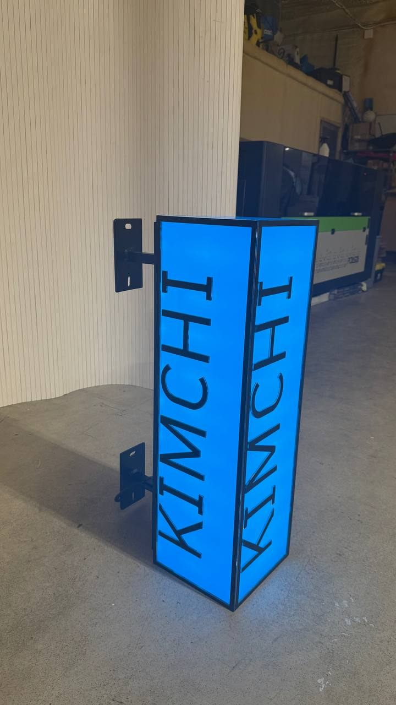
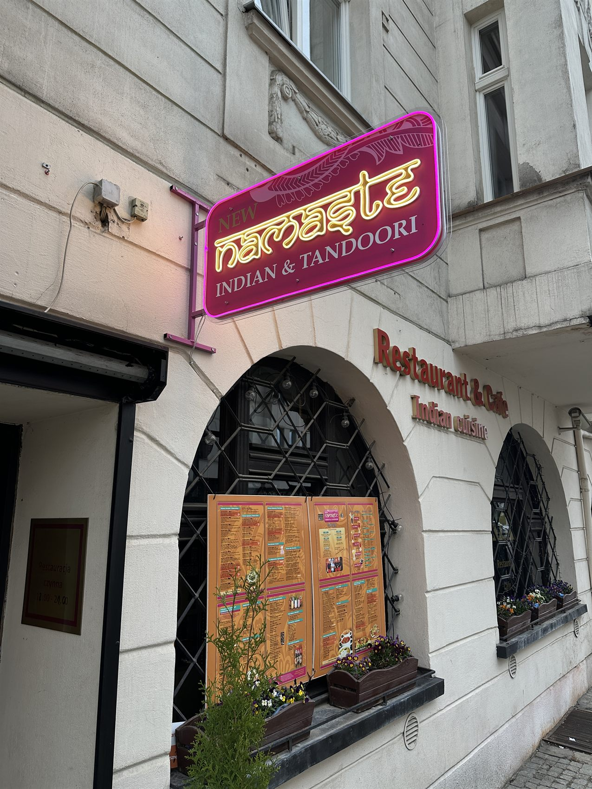
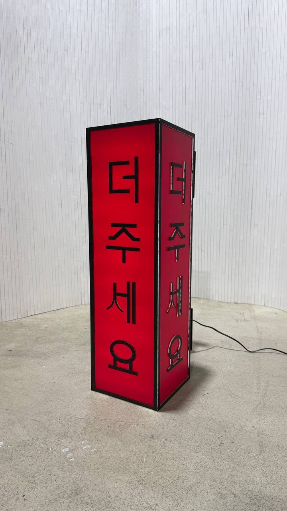
Wymiary – do 3 metrów w jednym elemencie, większe kasetony modułowe
W standardowej technologii możemy wykonać kaseton o długości do około 3 m w jednym elemencie. Wymiary drugiego boku, głębokość i sposób wykonania zależą od wybranego materiału, konstrukcji i możliwości transportu.
Kasetony dłuższe niż 3 m wykonujemy jako konstrukcje dzielone na części, odpowiednio połączone i usztywnione. Dzięki temu możemy realizować duże reklamy świetlne i długie oznakowania elewacyjne; 3 m nie jest maksymalnym rozmiarem całego szyldu.
Podział na moduły planujemy z uwzględnieniem estetyki łączeń, rozkładu oświetlenia, nośności i warunków montażu.
Zasilanie 12 V DC i oświetlenie LED
W naszych kasetonach podświetlanych stosujemy systemy LED 12 V DC, z modułami lub taśmami dobranymi do wymiarów i konstrukcji szyldu. Dostępne jest światło białe ciepłe, neutralne i zimne, a także wybrane kolory na zamówienie.
Do podłączenia kasetonu do sieci 230 V niezbędny jest odpowiednio dobrany zasilacz LED 12 V. Moc zasilania, rozmieszczenie źródeł światła i zabezpieczenia ustalamy indywidualnie. W reklamach zewnętrznych stosujemy komponenty i rozwiązania montażowe dostosowane do warunków eksploatacji.
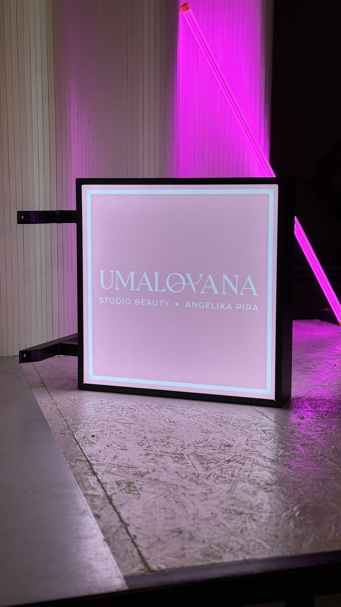
Konstrukcje i sposoby montażu
Przygotowujemy kasetony do montażu płaskiego na elewacji, montażu prostopadłego na wysięgniku lub uchwytach oraz instalacji na przygotowanej konstrukcji nośnej.
Stosujemy indywidualnie dobierane stelaże aluminiowe, wsporniki i mocowania. W zależności od projektu możliwe są również podkłady z płyt kompozytowych i elementy z tworzyw sztucznych. Liczbę punktów mocowania oraz rodzaj kotwienia określamy na podstawie wymiarów, ciężaru, podłoża i warunków obciążenia, szczególnie w przypadku semaforów zewnętrznych.
Kasetony do wnętrz i na zewnątrz
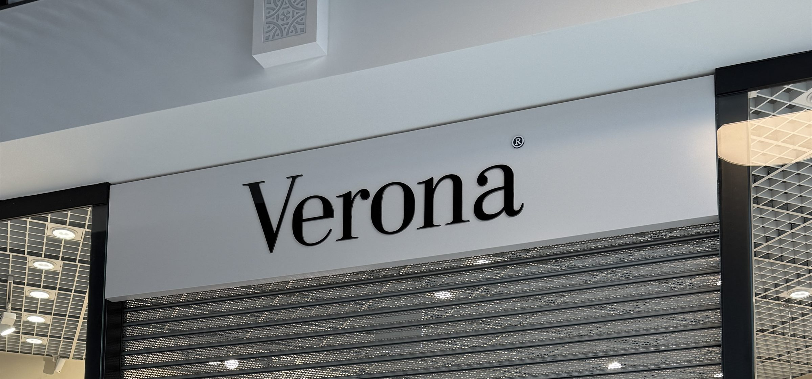
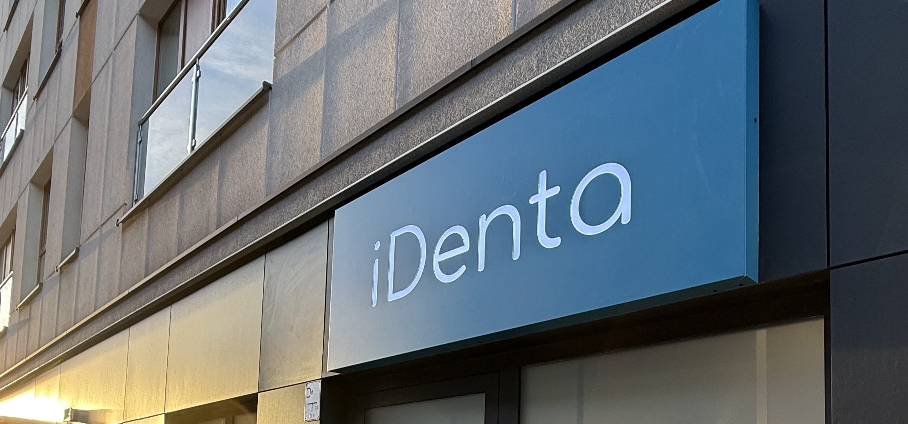
Personalizacja – logo, grafika i identyfikacja marki
Wykonujemy kasetony według przesłanego logotypu, projektu graficznego lub wytycznych identyfikacji wizualnej. Możemy połączyć kolorową folię, druk, frezowanie, plexi i przestrzenne litery w jednym szyldzie.
Przed produkcją uzgadniamy proporcje, wymiary, kolorystykę, typ podświetlenia i sposób montażu, aby kaseton był czytelny i spójny z wyglądem lokalu.
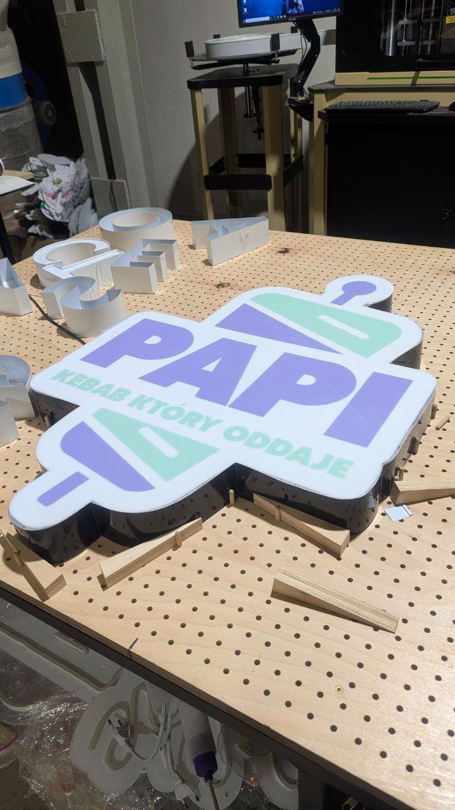

Dostawa, montaż i modernizacja kasetonów
Oferujemy produkcję kasetonów reklamowych na zamówienie, przygotowanie konstrukcji, dostawę oraz – w uzgodnionym zakresie – montaż i instalację. Możliwe jest także zamówienie kasetonu do samodzielnego montażu.
W zależności od stanu istniejącego szyldu możemy ocenić możliwość wymiany modułów LED, zasilacza, lica, grafiki lub wybranych elementów obudowy. Zakres modernizacji ustalamy po ocenie technicznej.
Galeria realizacji – kasetony ścienne i semaforowe
Zobacz galerię realizacji
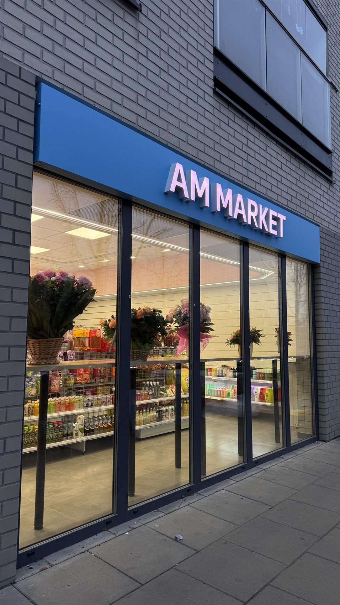
AM MARKETNiebieski kaseton z literami przestrzennymi BEER FUNTASYCzarny semafor na elewacji bałagan fryzjerzyKaseton z podświetlonym licem BARBER PROŚwiecące litery na czarnym kasetonie FRAVESemafor nad ogródkiem kawiarni namasteRóżowy szyld ze świecącym napisem


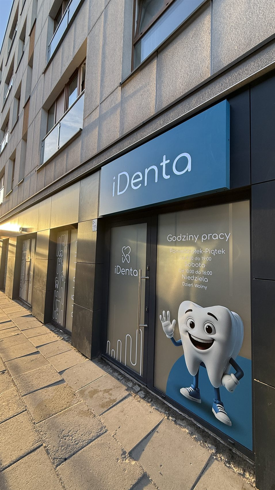
iDentaNiebieski kaseton na elewacji UMALOVANAKwadratowy semafor z uchwytami
FAQ – najczęstsze pytania o kasetony reklamowe
Zapytaj o swój projektJakie kasetony wykonujecie?
Ścienne, semaforowe, jednostronne i dwustronne, okrągłe, kwadratowe, prostokątne, z podświetleniem całego lica, liter lub bez LED.
Czy kaseton może być większy niż 3 metry?
Tak. Kasetony o większej długości realizujemy w częściach, z konstrukcją dostosowaną do wymiarów.
Czy można dobrać konkretny kolor?
Tak. Oferujemy malowanie wybranych elementów według RAL/NCS, oklejanie foliami Oracal i dobór dekorów płyt kompozytowych.
Czy wykonujecie kasetony dwustronne prostopadłe do ściany?
Tak, to kasetony semaforowe, wykonywane m.in. w formie koła, kwadratu i prostokąta.
Jak zasilane są kasetony LED?
Stosujemy instalacje LED 12 V DC z zasilaczem odpowiednio dobranym do podłączenia do sieci 230 V.
Czy można zamówić kaseton z montażem?
Tak, oferujemy dostawę i montaż zgodnie z ustalonym zakresem realizacji.
Uwaga: przykłady materiałów i wykończeń przedstawiają dostępne na rynku rozwiązania; zastosowanie niestandardowych wariantów potwierdzamy przy wycenie. Projekty mają charakter poglądowy i są dopasowywane do technologii, warunków montażu i obowiązujących wymagań przed produkcją.
Zamów kaseton reklamowy dopasowany do Twojej firmy
Szukasz kasetonu reklamowego LED na elewację, dwustronnego kasetonu semaforowego albo eleganckiego szyldu z giętego Dibondu? Wykonamy projekt dopasowany do miejsca montażu, kolorystyki marki i oczekiwanego efektu.
Prześlij logo, orientacyjne wymiary, zdjęcie miejsca montażu oraz informację, czy kaseton ma być jednostronny, dwustronny, podświetlany i przeznaczony do wnętrza czy na zewnątrz. Dobierzemy technologię, materiały, konstrukcję i sposób montażu.
+48 730 627 143